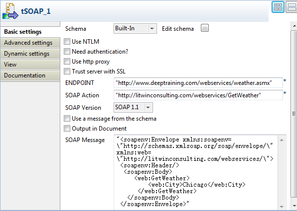
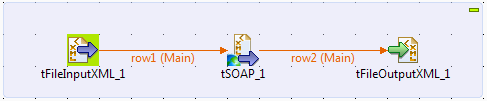
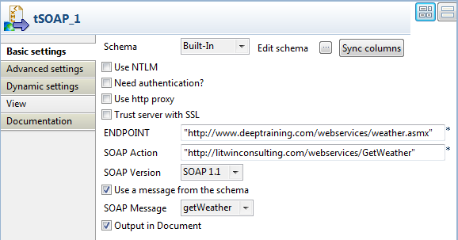
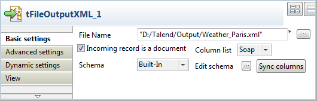

Component family | Internet | |
Function | tSOAP sends the defined SOAP message with the given parameters to the invoked Web service and returns the value as defined, based on the given parameters. | |
Purpose | This component calls a method via a Web service in order to retrieve the values of the parameters defined in the component editor. | |
Basic settings | Schema and Edit schema | A schema is a row description, i.e., it defines the number of fields that will be processed and passed on to the next component. This component always uses a built-in, read-only schema. By default, the schema contains three String type columns: - Header: stores the SOAP message header of the response from the server end. - Body: stores the SOAP message body of the response from the server end. - Fault: stores the error information when an error occurs during the SOAP message processing. If the Output in Document check box is selected, the schema then contains only one Document type column named Soap, which stores the whole response SOAP message in the XML format.
Click Edit schema to view the schema structure. WarningChanging the schema type may result in loss of the schema structure and therefore failure of the component. |
| Use NTLM | Select this check box if you want to use the NTLM authentication protocol. Domain: Name of the client domain. |
| Need authentication | Select this check box and enter a user name and a password in the corresponding fields if this is necessary to access the service. |
| Use http proxy | Select this check box if you are using a proxy server and fill in the necessary information. |
| Trust server with SSL | Select this check box to validate the server certificate to the client via an SSL protocol and fill in the corresponding fields: TrustStore file: enter the path (including filename) to the certificate TrustStore file that contains the list of certificates that the client trusts. TrustStore password: enter the password used to check the integrity of the TrustStore data. |
| ENDPOINT | Type in the URL address of the invoked Web server. |
| SOAP Action | Type in the URL address of the SOAPAction HTTP header field to be used to identify the intent of the SOAP HTTP request. |
| SOAP version | Select the version of the SOAP system you are using.
WarningThe required SOAP Envelope varies among versions. |
| Use a message from the input schema |
Select this check box to read a SOAP message from the preceding component to send to the invoked Web service. When this check box is selected, the SOAP message field becomes a drop-down list allowing you to select a Document type column to read an input XML file. WarningThis option makes sense only when the tSOAP component is connected with an input component the schema of which contains a Document type column to read a valid SOAP message. | |
| Output in Document | Select this check box to output the response message in XML format. | |
| SOAP message | Type in the SOAP message to be sent to the invoked Web service. The global and context variables can be used when you write a SOAP message. For further information about the context variables, see Talend Open Studio User Guide. |
Advanced settings | Use Kerberos | Select this check box to choose a tSetKerberosConfiguration component from the Kerberos configuration list. NoteThe OnSubjobOk trigger of tSetKerberosConfiguration should be used for connection with tSoap. |
| tStatCatcher Statistics | Select this check box to gather the Job processing metadata at a Job level as well as at each component level. |
Usage | This component can be used as an input or as an intermediate component. | |
Connections |
| Outgoing links (from one component to another): Row: Main; Iterate Trigger: Run if; On Component Ok; On Component Error.
Incoming links (from one component to another): Row: Main; Iterate Trigger: Run if; On Component Ok; On Component Error. For further information regarding connections, see Talend Open Studio User Guide. |
Limitation | N/A | |
This scenario describes a two-component Job that uses a Web service to retrieve the weather information of a given American city.
The Web service to be used is http://www.deeptraining.com/webservices/weather.asmx.
Drop the following components from the Palette onto the design workspace: tSOAP and tLogRow.

Right click tSOAP, select Row > Main from the contextual menu, and click tLogRow to connect the components together using a Main Row link.
Double-click tSOAP to open its Basic settings view and define the component properties.
In ENDPOINT field, type in or copy-paste the URL address of the Web service to be used between the quotation marks: “http://www.deeptraining.com/webservices/weather.asmx”.
In the SOAP Action field, type in or copy-paste the URL address of the SOAPAction HTTP header field that indicates that you want to retrieve the weather information: http://litwinconsulting.com/webservices/GetWeather.
Note
You can see this address by looking at the WSDL for the Web service you are calling. For the Web service of this example, in a web browser, append
?wsdlon the end of the URL of the Web service used in the ENDPOINT field, open the corresponding web page, and then see the SOAPAction defined under the operation node:<wsdl:operation name="GetWeather"> <soap:operation soapAction="http://litwinconsulting.com/webservices/GetWeather" style="document"/>
In the SOAP version field, select the version of the SOAP system being used. In this scenario, the version is SOAP 1.1.
In the SOAP message field, enter the XML-format message used to retrieve the weather information from the invoked Web service. In this example, the weather information of Chicago is needed, so the message is:
"<soapenv:Envelope xmlns:soapenv=\"http://schemas.xmlsoap.org/soap/envelope/\" xmlns:web=\"http://litwinconsulting.com/webservices/\"> <soapenv:Header/> <soapenv:Body> <web:GetWeather> <web:City>Chicago</web:City> </web:GetWeather> </soapenv:Body> </soapenv:Envelope>"Save your Job and press F6 to execute it.
The weather of Chicago is returned and displayed in the console of the Run view.

This scenario describes a three-component Job that uses a SOAP message from an input XML file to invoke a Web service for weather information of Paris, and writes the response to an XML file.
As in the previous scenario, the Web service to be used is http://www.deeptraining.com/webservices/weather.asmx.
Drop the following components from the Palette onto the design workspace: tFileInputXML, tSOAP, and tFileOutputXML.
Connect the components using Main > Row links.

Double-click the tFileInputXML component to open its Basic settings view and define the component properties.

Click the [...] button next to Edit schema to open the [Schema] dialog box.

Click the [+] button to add a column, give it a name, getWeather in this example, and select Document from the Type list. Then, click OK to close the dialog box.
In the File name/Stream field, enter the path to the input XML file that contains the SOAP message to be used, or browse to the path by clicking the [...] button.
The input file contains the following SOAP message:
<soapenv:Envelope xmlns:soapenv="http://schemas.xmlsoap.org/soap/envelope/" xmlns:web="http://litwinconsulting.com/webservices/"> <soapenv:Header/> <soapenv:Body> <web:GetWeather> <web:City>Paris</web:City> </web:GetWeather> </soapenv:Body> </soapenv:Envelope>In the Loop XPath query field, enter
“/”to define the root as the loop node of the input file structure.In the Mapping table, fill the XPath query column with
“.”to extract all data from context node of the source, and select the Get Nodes check box to build a Document type data flow.
Double-click the tSOAP component to open its Basic settings view and define the component properties.
In ENDPOINT field, enter or copy-paste the URL address of the Web service to be used between the quotation marks: “http://www.deeptraining.com/webservices/weather.asmx”.
In the SOAP Action field, enter or copy-paste the URL address of the SOAPAction HTTP header field that indicates that you want to retrieve the weather information: http://litwinconsulting.com/webservices/GetWeather.
Select the Use a message from the input schema check box, and select a Document type column from the SOAP Message list to read the SOAP message from the input file to send to the Web service. In this example, the input schema has only one column, getWeather.
Double-click the tFileOutputXML component to open its Basic settings view.
In the File Name field, enter the path to the output XML file.
Select the Incoming record is a document check box to retrieve the incoming data flow as an XML document. Note that a Column list appears allowing you choose a column to retrieve data from. In this example, the schema contains only one column.